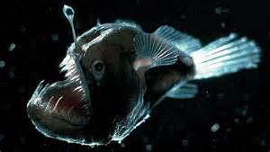

Il diavolo nero
Questa specie è diffusa in tutti gli oceani temperati o tropicali, fino ad una profondità di 4500 metri (anche se è stato catturato occasionalmente a circa 100 m di profondità, prevalentemente individui molto giovani), dove conduce vita mesopelagica e batipelagica.
Come per gli altri melanocetidi, anche M. johnsonii presenta uno spiccato dimorfismo sessuale: la femmina presenta un corpo tozzo e tondeggiante, occupato per oltre la metà dalla grossa testa con mandibole enormi, provviste di forti e grossi denti appuntiti. Sulla fronte spunta un'antenna mobile, l'illicio, provvista sulla punta di fotofori, che utilizza come esca luminosa per catturare le prede. Il resto del corpo è piccolo e allungato. Il maschio invece ha corpo tozzo e tondeggiante, con grande bocca provvista di denti. Le pinne in entrambi i sessi sono piccole e arrotondate. La livrea è molto semplice: un uniforme bruno scuro o nero lucido.
Possono ingoiare prede molto grosse grazie alle loro mandibole molto allargabili, posseggono inoltre uno stomaco elastico. All'interno di un Melanocetus di poco più di 6 cm è stato trovato un Chauliodus sloani di 24 cm.
La femmina può raggiungere i 18 cm, il maschio non supera i 3.I maschi sono molto più piccoli delle femmine, ma non sono parassiti di esse. Le uova probabilmente sono deposte in cordoni gelatinosi. Le larve sono pelagiche e vivono ad una profondità massima di 100 metri.